Phần mềm giúp cửa hàng vật tư xây dựng, điện nước, kim khí lập hóa đơn bán lẻ nhanh tại quầy: gõ vài chữ là ra tên hàng kèm đơn vị tính và giá bán; tiền được cộng tự động và đọc thành chữ; bấm một nút là in được hóa đơn khổ A4 có chỗ ký tên.
Phần mềm chạy ngay trên trình duyệt web của máy tính, không cần cài đặt, không cần Microsoft Office, không cần Internet. Toàn bộ dữ liệu được lưu ngay trên máy của cửa hàng.
Yêu cầu
Chi tiết
Hệ điều hành
Windows 10 hoặc Windows 11 (64-bit)
Trình duyệt
Microsoft Edge (có sẵn trong Windows), Google Chrome hoặc Cốc Cốc
Máy in
Bất kỳ máy in nào in được khổ A4 (không bắt buộc, có thể lưu hóa đơn ra PDF)
Dung lượng
Khoảng 10 MB, dữ liệu tăng rất chậm (hàng nghìn hóa đơn chỉ vài MB)
Bộ phần mềm gồm những gì
Sau khi giải nén file .zip, bạn có thư mục QuanLyBanHangVatTu gồm:
Tên
Công dụng
BTKTPMUD.exe
File chạy phần mềm. Bấm đúp để mở.
data (thư mục)
Nơi lưu toàn bộ dữ liệu: danh mục hàng hóa, lịch sử hóa đơn, thông tin cửa hàng. Không xóa thư mục này.
HUONG_DAN_SU_DUNG.pdf
Tài liệu bạn đang đọc.
BAT_DAU_NHANH.txt
Hướng dẫn rút gọn 1 trang.
Dữ liệu mẫu có sẵnThư mục data đã có sẵn 42 mặt hàng vật tư thông dụng và 4 hóa đơn mẫu để bạn dùng thử. Khi bắt đầu bán hàng thật, xem cách xóa dữ liệu mẫu ở mục 12.
Bán hàng nhanh trong 1 phút
Bấm đúp BTKTPMUD.exe. Trình duyệt tự mở trang bán hàng.
Gõ tên khách (bỏ trống nếu là khách lẻ).
Ở cột Tên hàng hóa, gõ vài chữ, ví dụ xi mang, rồi bấm Enter để chọn. ĐVT và đơn giá tự điền.
Gõ số lượng, rồi bấm F2 để thêm dòng hàng tiếp theo.
Bấm LƯU HÓA ĐƠN (hoặc Ctrl+S), rồi bấm In hóa đơn.
2Cài đặt và mở phần mềm
2.1. Giải nén và chạy lần đầu
Chép file BTKTPMUD-v1.0.0-windows.zip vào máy, ví dụ vào ổ D:\.
Bấm chuột phải vào file zip, chọn Giải nén tất cả… (Extract All…), rồi bấm Giải nén. Bạn được thư mục QuanLyBanHangVatTu.
Mở thư mục đó và bấm đúp vào BTKTPMUD.exe.
Một cửa sổ màu đen hiện lên, sau khoảng 1 giây trình duyệt tự mở trang http://localhost:8080 với màn hình Lập Hóa Đơn.
Phải giải nén trước khi chạyNếu bấm đúp file exe ngay bên trong file zip (chưa giải nén), Windows chạy nó trong thư mục tạm: dữ liệu bạn nhập sẽ bị mất khi đóng. Luôn giải nén ra một thư mục cố định rồi mới chạy.
Nên đặt ở đâu?Đặt thư mục ở ổ D:\ (ví dụ D:\QuanLyBanHangVatTu) thay vì ở Desktop hoặc ổ C:\, để dữ liệu không bị mất khi cài lại Windows.
2.2. Cảnh báo của Windows lần đầu chạy
Phần mềm chưa đăng ký chữ ký số với Microsoft, nên lần đầu chạy Windows có thể hiện các cảnh báo sau. Đây là điều bình thường.
Cảnh báo
Cách xử lý
"Windows đã bảo vệ PC của bạn" (Windows protected your PC, màn hình xanh dương)
Bấm dòng chữ Thông tin bổ sung (More info), rồi bấm nút Vẫn chạy (Run anyway). Chỉ cần làm một lần.
Tường lửa Windows hỏi có cho phép truy cập mạng không (Windows Defender Firewall)
Tick ô Mạng riêng (Private networks) rồi bấm Cho phép (Allow access). Bước này để các máy khác, điện thoại trong cửa hàng dùng chung được. Nếu chỉ dùng 1 máy, bấm Hủy cũng không sao.
Phần mềm diệt virus chặn file
Thêm thư mục phần mềm vào danh sách ngoại lệ (Exclusions) của phần mềm diệt virus.
2.3. Cửa sổ đen: "máy chủ" của phần mềm
Cửa sổ đen là bộ phận lưu và xử lý dữ liệu. Nó hiện địa chỉ để mở phần mềm trên máy này và trên các máy khác trong cửa hàng:
==============================================================
HỆ THỐNG QUẢN LÝ BÁN HÀNG & HÓA ĐƠN CỬA HÀNG VẬT TƯ v1.0.0
==============================================================
2026/11/17 08:00:05 Thư mục dữ liệu: D:\QuanLyBanHangVatTu\data
2026/11/17 08:00:05 Đã sao lưu dữ liệu đầu ngày vào: D:\QuanLyBanHangVatTu\data\backups\20261117
► Mở trên máy này: http://localhost:8080► Máy khác trong mạng LAN: http://192.168.1.5:8080
Giữ cửa sổ này mở trong khi bán hàng. Nhấn Ctrl+C để tắt phần mềm.
--------------------------------------------------------------
Giữ cửa sổ đen mở trong suốt giờ bán hàngCó thể thu nhỏ nó xuống thanh tác vụ, nhưng không đóng. Đóng cửa sổ đen nghĩa là tắt phần mềm.
Lỡ đóng trình duyệt: mở lại trình duyệt và gõ localhost:8080, hoặc bấm đúp BTKTPMUD.exe thêm lần nữa (phần mềm chỉ mở lại trang, không chạy trùng).
Lưu trang vào thanh dấu trang (bấm Ctrl+D trên trình duyệt) để lần sau mở nhanh.
2.4. Tạo lối tắt ngoài màn hình nền và tự chạy khi bật máy
Lối tắt ngoài màn hình nền (Desktop)
Bấm chuột phải vào BTKTPMUD.exe. Trên Windows 11, chọn thêm Hiển thị thêm tùy chọn (Show more options).
Chọn Gửi tới, rồi Màn hình nền (tạo lối tắt) (Send to → Desktop (create shortcut)).
Có thể đổi tên lối tắt thành "Bán hàng" cho dễ nhận biết.
Tự chạy phần mềm mỗi khi bật máy
Bấm tổ hợp phím Windows+R, gõ shell:startup rồi bấm Enter. Một thư mục mở ra.
Chép lối tắt "Bán hàng" vừa tạo vào thư mục đó. Từ lần bật máy sau, phần mềm tự chạy và tự mở trình duyệt.
2.5. Tắt phần mềm
Cuối ngày, bấm vào cửa sổ đen rồi bấm Ctrl+C, hoặc bấm nút X đóng cửa sổ. Dữ liệu được lưu ngay sau mỗi thao tác nên tắt lúc nào cũng an toàn. Tắt máy tính bình thường cũng không mất dữ liệu.
3Làm quen giao diện
Màn hình chính là Lập Hóa Đơn. Các vùng chính được đánh số trong hình:
Hình 3.1. Màn hình Lập Hóa Đơn
1
4 tab chức năng: Lập Hóa Đơn · Thư Viện Hàng Hóa · Lịch Sử Hóa Đơn · Thống Kê Nhanh. Bấm để chuyển, hoặc dùng Alt+1 đến Alt+4.
2
Trạng thái kết nối: chấm xanh "Đã kết nối máy chủ" là bình thường. Hiện chữ vàng "Ngoại tuyến" là mất kết nối (xem mục 11).
3
Nút bánh răng: nhập tên, địa chỉ, số điện thoại cửa hàng in trên hóa đơn.
4
Thông tin khách hàng: tên khách, ngày lập đơn, ghi chú.
5
Bảng hàng hóa: mỗi dòng là một mặt hàng hoặc dịch vụ. Thành tiền tự tính.
6
Thanh công cụ: Thêm dòng hàng, Hoàn tác (con số cho biết còn bao nhiêu bước hoàn tác được), Làm mới.
7
Tổng tiền thanh toán (chữ số lớn) và số tiền bằng chữ, cập nhật ngay khi bạn gõ.
8
LƯU HÓA ĐƠN (xanh lá): lưu vào hệ thống.
9
IN HÓA ĐƠN (xanh dương): in hóa đơn khổ A4.
Cột bên phải dưới cùng là bảng phím tắt, luôn hiện sẵn để thu ngân tra cứu.
4Nhập thông tin cửa hàng in trên hóa đơn
Làm một lần trước khi bán hàng, để đầu mỗi hóa đơn in ra có tên và địa chỉ cửa hàng của bạn.
Bấm nút bánh răng ở góc trên bên phải màn hình.
Điền Tên cửa hàng, Địa chỉ, Điện thoại. Có thể đổi Tiêu đề hóa đơn (mặc định "HÓA ĐƠN BÁN LẺ") và Lời cảm ơn cuối hóa đơn.
Bấm Lưu thông tin. Tên cửa hàng hiện ngay ở góc trên bên trái.
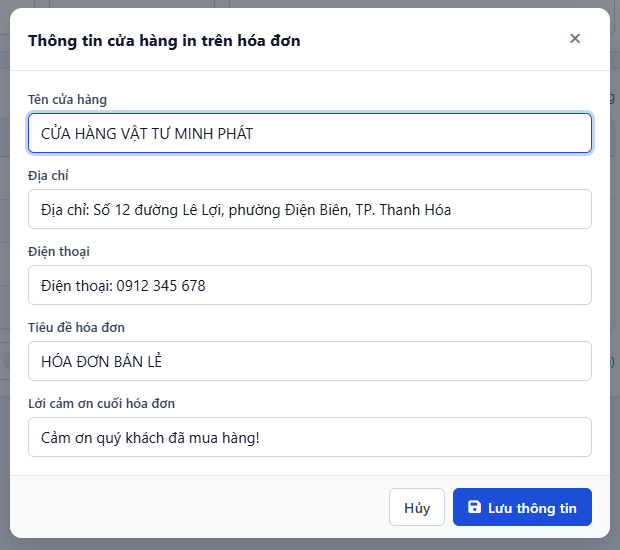
Hình 4.1. Hộp thoại thông tin cửa hàng
MẹoÔ địa chỉ và điện thoại được in nguyên văn, nên bạn có thể ghi kèm chữ "Địa chỉ:", "ĐT:" hoặc số tài khoản ngân hàng nếu muốn.
5Lập hóa đơn bán hàng
5.1. Thông tin khách hàng
Tên khách hàng: gõ tên khách, có thể ghi kèm công trình trong ngoặc, ví dụ Anh Tuấn (Công trình nhà ông Bảy). Để trống thì hóa đơn ghi là Khách lẻ.
Ngày lập đơn: tự điền ngày hôm nay. Bấm vào để chọn ngày khác nếu cần.
Ghi chú: không bắt buộc, ví dụ địa chỉ giao hàng, hẹn giờ lấy hàng. Ghi chú được in lên hóa đơn.
Bấm Enter ở mỗi ô để nhảy sang ô tiếp theo; từ ô Ghi chú, Enter đưa con trỏ xuống dòng hàng đầu tiên.
5.2. Thêm hàng bằng gợi ý tự động
Bấm vào ô Tên hàng hóa, vật tư và gõ một vài chữ của tên hàng. Gõ không dấu cũng được: ong nhua tìm ra "Ống nhựa…"; gõ nhiều từ để lọc chính xác hơn, ví dụ ong 21 ra "Ống nhựa Tiền Phong D21".
Danh sách gợi ý hiện ra, kèm đơn vị tính và giá bán. Dùng phím ↓↑ để chọn, rồi bấm Enter (hoặc bấm chuột vào mặt hàng).
Phần mềm tự điền ĐVT và Đơn giá, rồi đưa con trỏ sang ô Số lượng. Gõ số lượng.
Bấm F2 (hoặc Ctrl+Enter, hoặc nút + Thêm dòng hàng) để thêm mặt hàng tiếp theo.
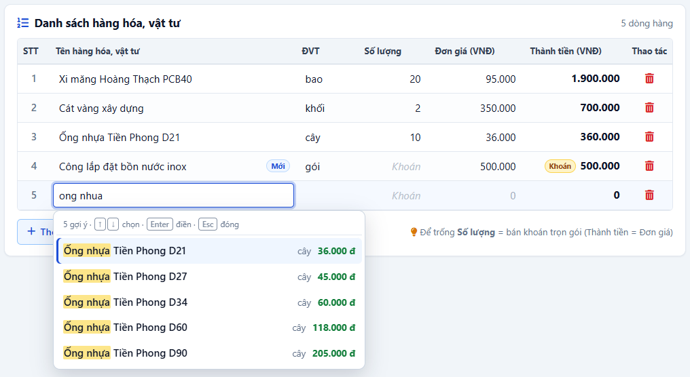
Hình 5.1. Gõ "ong nhua" (không dấu), phần mềm gợi ý các loại ống nhựa kèm ĐVT và giá
Nhập bằng bàn phím, không cần chuộtPhím Enter đi lần lượt qua các ô: Tên hàng → ĐVT → Số lượng → Đơn giá → dòng tiếp theo. Ở ô Đơn giá của dòng cuối, Enter tự thêm dòng mới. Có thể sửa lại ĐVT hoặc đơn giá đã tự điền cho riêng hóa đơn này mà không ảnh hưởng thư viện.
Thành tiền của từng dòng, tổng tiền và số tiền bằng chữ được tính ngay khi gõ, không cần bấm nút tính tiền. Số lượng có thể là số lẻ, ví dụ 2.5 mét.
5.3. Hàng mới chưa có trong thư viện
Nếu khách mua mặt hàng chưa có trong thư viện, cứ gõ đầy đủ tên hàng, bấm Esc để đóng gợi ý (nếu có), rồi tự nhập ĐVT và đơn giá. Dòng đó có nhãn Mới (số 1 ở hình dưới).
Khi lưu hóa đơn, mặt hàng mới được tự động thêm vào Thư viện hàng hóa với giá bán bằng đơn giá vừa nhập. Lần sau chỉ cần gõ vài chữ là có gợi ý. Nhớ vào Thư viện bổ sung giá vốn cho mặt hàng đó (xem mục 7).
5.4. Bán khoán trọn gói
Với các khoản không tính theo số lượng như tiền công lắp đặt, khoán trọn gói vật tư phụ, vận chuyển…:
Gõ tên khoản, ví dụ Công lắp đặt bồn nước inox, ĐVT ghi gói.
Để trống ô Số lượng (số 2): ô hiện chữ mờ "Khoán".
Nhập Đơn giá là tổng số tiền khoán. Thành tiền = Đơn giá, dòng có nhãn Khoán (số 3). Phần mềm không báo lỗi.
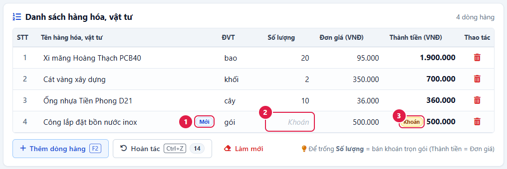
Hình 5.2. Dòng 4 là hàng mới (1), để trống số lượng (2) nên được tính bán khoán (3)
Trên hóa đơn in ra, cột Số lượng của dòng bán khoán ghi chữ Khoán.
5.5. Gõ giá nhanh
Bạn gõ
Phần mềm hiểu là
20000 hoặc 20.000
20.000 đ
20k
20.000 đ (k = nghìn)
500k
500.000 đ
1,5tr hoặc 1.5m
1.500.000 đ (tr hoặc m = triệu)
Khi rời khỏi ô, đơn giá tự hiển thị có dấu chấm phân cách hàng nghìn (ví dụ 500.000). Ô đơn giá nhập sai (có chữ) sẽ tô đỏ.
5.6. Sửa, xóa dòng và Hoàn tác
Sửa: bấm vào ô cần sửa và gõ lại. Tiền tự tính lại.
Xóa một dòng: bấm biểu tượng thùng rác đỏ ở cuối dòng, hoặc đặt con trỏ trong dòng rồi bấm Ctrl+Delete.
Hoàn tác: lỡ xóa nhầm dòng hoặc sửa nhầm giá, bấm Ctrl+Z hoặc nút Hoàn tác để quay lại. Hoàn tác được tối đa 50 bước liên tiếp.
Làm mới: nút Làm mới xóa toàn bộ bảng để lập đơn khác (có hỏi xác nhận, và vẫn hoàn tác được).
Tự động sao lưu bản nhápHóa đơn đang lập dở được tự lưu trên máy (dòng "Đã tự sao lưu lúc …" ở góc khung Thông tin khách hàng). Lỡ tải lại trang hay tắt trình duyệt, mở lại sẽ thấy thông báo "Đã khôi phục hóa đơn đang lập dở" và dữ liệu vẫn còn nguyên.
5.7. Lưu hóa đơn
Kiểm tra lại các dòng hàng và tổng tiền.
Bấm LƯU HÓA ĐƠN hoặc Ctrl+S.
Hộp thoại xác nhận hiện mã hóa đơn, tổng tiền và số tiền bằng chữ. Bấm In hóa đơn để in luôn, hoặc Lập hóa đơn mới để phục vụ khách tiếp theo.
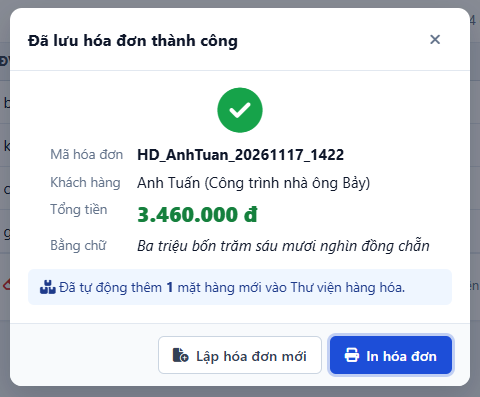
Hình 5.3. Lưu hóa đơn thành công
Mã hóa đơn được tạo tự động theo dạng HD_TênKhách_NămThángNgày_GiờPhút, ví dụ HD_AnhTuan_20261117_0930, để dễ tìm lại.
Khi lưu bị báo lỗiDòng có lỗi được tô đỏ và con trỏ nhảy tới ô cần sửa. Các lỗi thường gặp: dòng có giá nhưng chưa có tên hàng, có tên hàng nhưng chưa nhập đơn giá, hoặc số lượng âm. Dòng hoàn toàn trống được bỏ qua, không cần xóa.
5.8. Lập hóa đơn mới
Sau khi lưu, bấm Lập hóa đơn mới trong hộp thoại, hoặc nút Làm mới. Nếu bấm Lưu lần nữa cho đúng hóa đơn đã lưu, phần mềm sẽ hỏi lại để tránh lưu trùng hai lần.
6In hóa đơn khổ A4
Có 3 cách in:
Bấm IN HÓA ĐƠN hoặc Ctrl+P trên màn hình Lập hóa đơn: in hóa đơn đang hiển thị.
Bấm In hóa đơn trong hộp thoại ngay sau khi lưu.
Vào Lịch Sử Hóa Đơn, bấm nút In ở hóa đơn cần in lại.
Trình duyệt mở hộp thoại in. Thiết lập một lần như sau, các lần sau trình duyệt tự nhớ:
Mục trong hộp thoại in
Chọn
Máy in (Destination / Đích)
Tên máy in của cửa hàng. Chọn Lưu dưới dạng PDF (Save as PDF) nếu muốn gửi hóa đơn qua Zalo hoặc email.
Bố cục (Layout)
Dọc (Portrait)
Khổ giấy (Paper size), trong "Cài đặt khác"
A4
Lề (Margins)
Mặc định (Default)
Tỷ lệ (Scale)
Mặc định / 100
Đầu trang và chân trang (Headers and footers)
Bỏ tick: để giấy không bị in kèm địa chỉ web và ngày giờ ở mép trang
Bấm In. Hóa đơn in ra chỉ gồm phiếu bán hàng: menu và nút bấm của phần mềm được tự động ẩn.
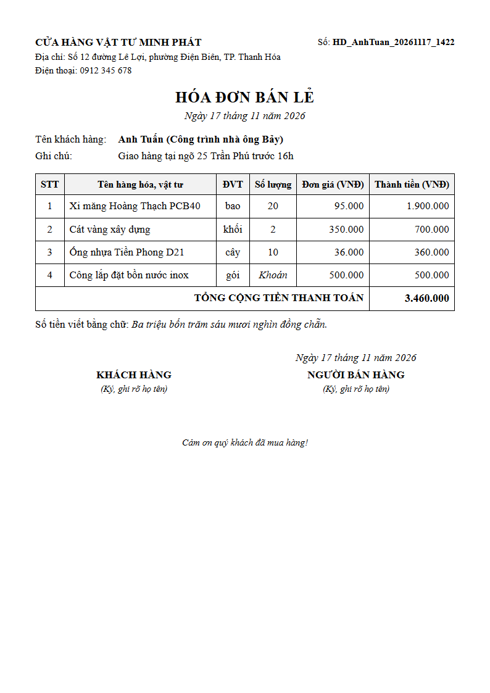
Hình 6.1. Mẫu hóa đơn in khổ A4: thông tin cửa hàng, số hóa đơn, ngày tháng, bảng hàng, tổng tiền bằng số và bằng chữ, chỗ ký của khách hàng và người bán
In hóa đơn chưa lưuCó thể in khi chưa lưu, ví dụ để làm báo giá cho khách. Khi đó ô "Số" trên hóa đơn ghi (chưa lưu).
7Thư viện hàng hóa
Thư viện là danh mục hàng hóa dùng chung cho mọi máy trong cửa hàng; đây là nguồn của chức năng gợi ý khi lập hóa đơn.
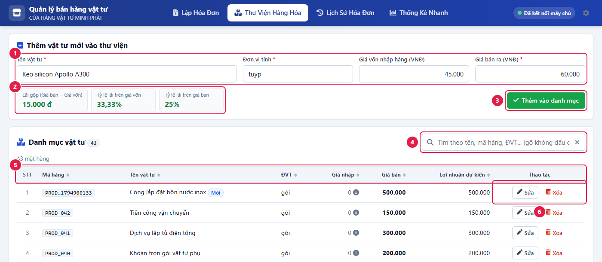
Hình 7.1. Tab Thư Viện Hàng Hóa
1
Form thêm / sửa vật tư: Tên vật tư, Đơn vị tính (có gợi ý: cây, cuộn, mét, cái, bao, tấm, kg…), Giá vốn nhập hàng, Giá bán ra.
2
Lãi dự kiến hiện ngay khi nhập giá: Lãi gộp = Giá bán − Giá vốn; Tỷ lệ lãi trên giá vốn và trên giá bán. Bán lỗ thì số hiện màu đỏ.
3
Nút Thêm vào danh mục (đổi thành Lưu thay đổi khi đang sửa, kèm nút Hủy sửa).
4
Ô tìm kiếm: lọc ngay khi gõ, theo tên, mã hàng hoặc ĐVT, gõ không dấu được.
5
Tiêu đề cột: bấm vào tên cột (Mã hàng, Tên vật tư, Giá nhập, Giá bán, Lợi nhuận…) để sắp xếp tăng / giảm dần.
6
Nút Sửa: đưa mặt hàng lên form để sửa. Nút Xóa: xóa khỏi thư viện (có hỏi xác nhận).
Thêm, sửa, xóa mặt hàng
Thêm: nhập Tên vật tư, Đơn vị tính, Giá vốn, Giá bán (gõ nhanh 45k cũng được) rồi bấm Thêm vào danh mục. Mặt hàng hiện ở đầu bảng với nhãn Mới trong ngày. Hai mặt hàng không được trùng tên.
Sửa giá, đổi ĐVT: tìm mặt hàng, bấm Sửa, sửa trên form (form chuyển màu xanh nhạt) rồi bấm Lưu thay đổi. Bấm Hủy sửa hoặc Esc để bỏ.
Xóa: bấm Xóa và xác nhận.
Lưu ý
Đổi giá hoặc xóa mặt hàng chỉ ảnh hưởng các hóa đơn lập sau đó; hóa đơn đã lưu giữ nguyên giá lúc bán.
Mặt hàng tự thêm từ hóa đơn (mục 5.3) và các khoản dịch vụ có giá vốn bằng 0, hiện biểu tượng ⓘ ở cột Giá nhập. Nên bổ sung giá vốn để biết lãi chính xác.
8Lịch sử hóa đơn: tra cứu, in lại, sửa, xóa
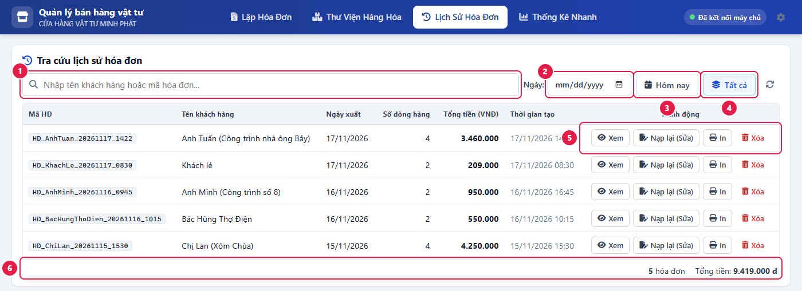
Hình 8.1. Tab Lịch Sử Hóa Đơn, hóa đơn mới nhất ở trên cùng
1
Ô tìm kiếm: gõ tên khách hàng (không dấu được) hoặc mã hóa đơn.
2
Chọn ngày: chỉ hiện hóa đơn lập trong ngày đó.
3
Hôm nay: lọc nhanh các hóa đơn trong ngày.
4
Tất cả: xóa bộ lọc, hiện lại toàn bộ hóa đơn.
5
Các nút cho từng hóa đơn: Xem · Nạp lại (Sửa) · In · Xóa.
6
Tổng kết: số hóa đơn và tổng tiền của các hóa đơn đang hiển thị, dùng để xem doanh thu một ngày hoặc một khách.
Xem chi tiết hóa đơn
Bấm Xem (hoặc bấm đúp vào dòng) để mở phiếu bán hàng đầy đủ, giống bản in. Trong cửa sổ này có thể bấm In hóa đơn hoặc Nạp lại (Sửa). Bấm Esc để đóng.
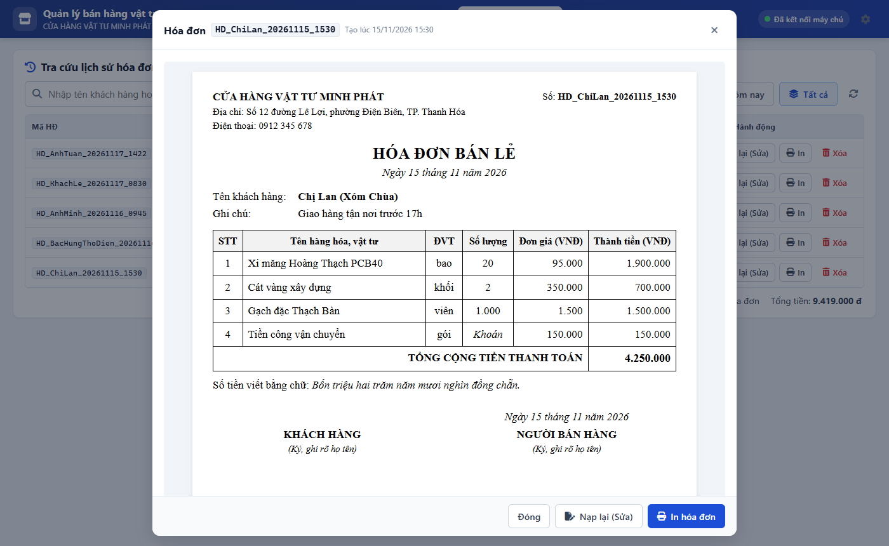
Hình 8.2. Xem chi tiết hóa đơn
Nạp lại hóa đơn cũ để sửa
Dùng khi khách mua thêm, trả bớt hàng, hoặc lập đơn sai cần sửa.
Bấm Nạp lại (Sửa) ở hóa đơn cần sửa. Phần mềm chuyển sang tab Lập Hóa Đơn và nạp đầy đủ thông tin khách và các dòng hàng.
Sửa số lượng, thêm hoặc xóa dòng như khi lập hóa đơn mới.
Chọn một trong hai cách lưu:
CẬP NHẬT HÓA ĐƠN: ghi đè hóa đơn cũ, giữ nguyên mã hóa đơn.
Lưu thành đơn mới: giữ nguyên hóa đơn cũ và tạo hóa đơn mới (ví dụ dùng hóa đơn cũ làm mẫu cho khách quen mua lại).
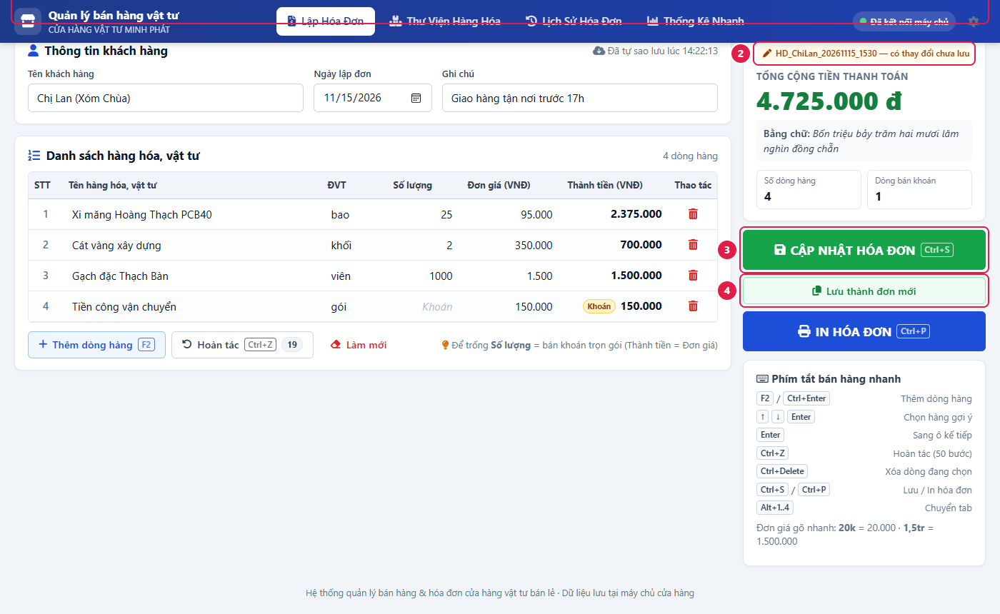
Hình 8.3. Đang sửa hóa đơn cũ
1
Thanh thông báo cho biết đang sửa hóa đơn nào. Nút Chuyển thành đơn mới giữ lại dữ liệu nhưng không còn gắn với hóa đơn cũ.
2
Trạng thái: "Đã lưu" hoặc "có thay đổi chưa lưu".
3
Cập nhật hóa đơn: ghi đè hóa đơn cũ.
4
Lưu thành đơn mới.
Xóa hóa đơn
Bấm Xóa và xác nhận. Dùng khi hủy đơn hoặc lập nhầm.
Xóa hóa đơn không hoàn tác đượcChỉ khôi phục được từ bản sao lưu đầu ngày (xem mục 12). Nên giao quyền xóa hóa đơn cho chủ cửa hàng.
9Thống kê nhanh
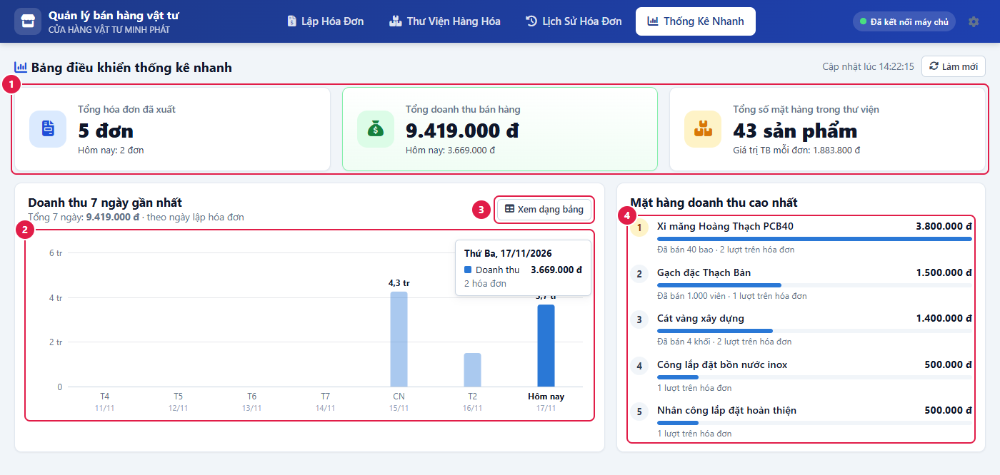
Hình 9.1. Tab Thống Kê Nhanh
1
3 thẻ tổng quan: tổng số hóa đơn đã xuất, tổng doanh thu, tổng số mặt hàng trong thư viện; kèm số liệu riêng của hôm nay và giá trị trung bình mỗi đơn.
2
Biểu đồ doanh thu 7 ngày gần nhất (theo ngày lập hóa đơn). Rê chuột lên cột để xem số tiền và số hóa đơn từng ngày.
3
Nút Xem dạng bảng: chuyển biểu đồ thành bảng số liệu.
4
5 mặt hàng doanh thu cao nhất, kèm số lượng đã bán.
Bấm Làm mới ở góc trên để cập nhật số liệu mới nhất.
10Dùng trên nhiều máy và điện thoại
Nhiều máy tính, điện thoại, máy tính bảng trong cửa hàng có thể cùng lập hóa đơn trên một kho dữ liệu chung.
Chọn một máy làm máy chủ (thường là máy ở quầy thu ngân). Chỉ chạy BTKTPMUD.exe trên máy này và để máy luôn bật trong giờ bán hàng.
Xem địa chỉ ở dòng "Máy khác trong mạng LAN" trên cửa sổ đen, ví dụ http://192.168.1.5:8080.
Trên máy khác hoặc điện thoại kết nối cùng mạng Wi-Fi / mạng dây của cửa hàng, mở trình duyệt và gõ đúng địa chỉ đó.
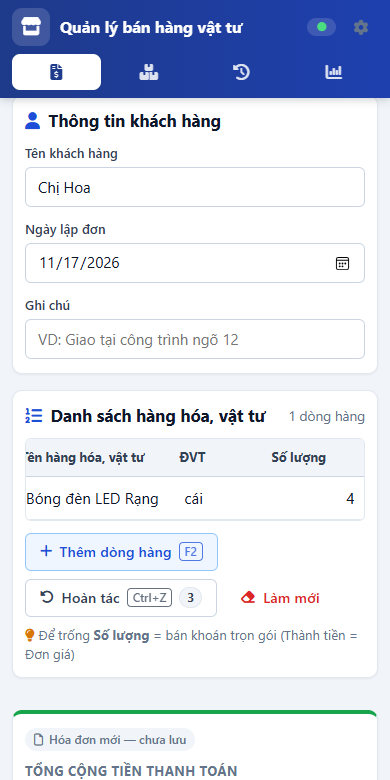
Hình 10.1. Lập hóa đơn trên điện thoại
Không vào được từ máy khác?
Kiểm tra hai máy cùng một mạng Wi-Fi.
Lần đầu chạy, tường lửa Windows phải được Cho phép (mục 2.2). Nếu lỡ bấm Hủy: mở Windows Security → Tường lửa → Cho phép ứng dụng qua tường lửa, tick BTKTPMUD ở cột Mạng riêng.
Địa chỉ IP có thể thay đổi sau khi khởi động lại modem Wi-Fi: xem lại địa chỉ mới trên cửa sổ đen.
Các máy cùng lưu hóa đơn một lúc vẫn an toàn: phần mềm xếp hàng các lượt ghi, không hóa đơn nào bị mất hoặc ghi đè.
11Khi mất kết nối máy chủ
Nếu cửa sổ đen trên máy chủ bị tắt, máy chủ mất điện, hoặc điện thoại rớt Wi-Fi, phần mềm không bị treo mà tự chuyển sang chế độ ngoại tuyến:
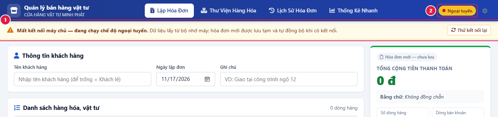
Hình 11.1. Chế độ ngoại tuyến
1
Thanh cảnh báo màu vàng cho biết đang ngoại tuyến và số hóa đơn đang chờ đồng bộ. Nút Thử kết nối lại để kiểm tra ngay.
2
Nhãn trạng thái chuyển thành Ngoại tuyến.
Trong lúc ngoại tuyến:
Vẫn lập hóa đơn được, vẫn có gợi ý tên hàng (dùng bản thư viện đã lưu trên máy ở lần kết nối gần nhất).
Bấm Lưu: hóa đơn được lưu tạm trên máy với mã bắt đầu bằng OFFLINE_, vẫn in được bình thường.
Khi máy chủ hoạt động lại, phần mềm tự đẩy các hóa đơn lưu tạm lên máy chủ và thông báo "Đã đồng bộ…". Hóa đơn được cấp mã chính thức.
Chưa sửa được thư viện hàng hóa và chưa xóa được hóa đơn cho đến khi có kết nối.
Khi còn hóa đơn chờ đồng bộKhông xóa lịch sử duyệt web, không dùng chế độ ẩn danh, và mở lại phần mềm trên đúng máy, đúng trình duyệt đó, vì hóa đơn lưu tạm nằm trong trình duyệt của máy đó.
12Dữ liệu: sao lưu, khôi phục, chuyển máy
Toàn bộ dữ liệu nằm trong thư mục data cạnh file BTKTPMUD.exe:
File
Nội dung
products_data.json
Thư viện hàng hóa
history_data.json
Lịch sử hóa đơn
settings.json
Thông tin cửa hàng in trên hóa đơn
backups\ (thư mục)
Bản sao lưu tự động mỗi ngày
Sao lưu tự động
Mỗi ngày, lần đầu mở phần mềm, toàn bộ dữ liệu được sao vào data\backups\NămThángNgày (ví dụ data\backups\20261117). Phần mềm giữ 14 ngày gần nhất.
Nên tự sao lưu ra USB hoặc Google Drive mỗi tuầnBản sao lưu tự động nằm cùng ổ cứng với dữ liệu: nếu máy hỏng ổ cứng hoặc bị mất thì mất cả hai. Hãy chép cả thư mục data ra USB hoặc tải lên Google Drive định kỳ.
Khôi phục từ bản sao lưu
Tắt phần mềm (đóng cửa sổ đen).
Mở data\backups\, vào thư mục ngày muốn khôi phục.
Chép các file .json trong đó, dán đè vào thư mục data.
Mở lại phần mềm.
Lưu ý: các hóa đơn lập sau thời điểm sao lưu sẽ không còn. Chỉ khôi phục khi thật cần thiết.
Chuyển phần mềm sang máy khác
Tắt phần mềm, chép cả thư mụcQuanLyBanHangVatTu (gồm BTKTPMUD.exe và thư mục data) sang máy mới, rồi chạy BTKTPMUD.exe trên máy mới.
Xóa dữ liệu mẫu để bắt đầu bán hàng thật
Tắt phần mềm.
Vào thư mục data, xóa file history_data.json (4 hóa đơn mẫu).
Nếu muốn tự nhập danh mục hàng từ đầu, xóa thêm products_data.json. Nếu muốn giữ 42 mặt hàng mẫu để sửa giá cho phù hợp, giữ lại file này.
Mở lại phần mềm. Các file đã xóa được tạo lại ở dạng trống.
Không sửa file dữ liệu bằng tayKhông mở các file .json bằng Notepad hay Word để sửa. Mọi thay đổi nên làm trong phần mềm. File bị sửa sai định dạng sẽ khiến phần mềm báo lỗi khi khởi động.
13Bảng phím tắt
Phím
Chức năng
F2 hoặc Ctrl+Enter
Thêm dòng hàng mới và đưa con trỏ vào ô Tên hàng
↓↑ rồi Enter
Chọn mặt hàng trong danh sách gợi ý
Esc
Đóng danh sách gợi ý / đóng hộp thoại
Enter
Sang ô kế tiếp: Tên hàng → ĐVT → Số lượng → Đơn giá → dòng sau
Tab / Shift+Tab
Sang ô kế tiếp / quay lại ô trước
Ctrl+Z
Hoàn tác thao tác vừa làm (tối đa 50 bước)
Ctrl+Delete
Xóa dòng hàng đang đặt con trỏ
Ctrl+S
Lưu hóa đơn
Ctrl+P
In hóa đơn đang lập
Alt+1 / 2 / 3 / 4
Chuyển nhanh sang tab Lập Hóa Đơn / Thư Viện / Lịch Sử / Thống Kê
14Câu hỏi thường gặp và xử lý sự cố
Hiện tượng
Cách xử lý
Trình duyệt báo "Không thể truy cập trang web này" hoặc "localhost từ chối kết nối"
Phần mềm chưa chạy hoặc cửa sổ đen đã bị đóng. Bấm đúp lại BTKTPMUD.exe.
Cửa sổ đen hiện chữ [LỖI] Không mở được cổng 8080
Một phần mềm khác đang dùng cổng 8080. Tạo lối tắt của BTKTPMUD.exe, bấm chuột phải vào lối tắt → Thuộc tính (Properties), ở ô Đích (Target) thêm vào cuối: -port 8081, bấm OK. Chạy bằng lối tắt đó và mở trình duyệt tại localhost:8081.
Cửa sổ đen báo [LỖI] Không mở được dữ liệu… sai định dạng JSON
File dữ liệu bị hỏng do sửa tay. Khôi phục file đó từ data\backups (mục 12).
Bấm đúp lại BTKTPMUD.exe chỉ thấy trình duyệt mở
Bình thường: phần mềm đang chạy sẵn nên chỉ mở thêm trang.
Gõ tên hàng không thấy gợi ý
Mặt hàng chưa có trong thư viện: cứ gõ đầy đủ tên rồi nhập ĐVT, đơn giá; khi lưu, mặt hàng được tự thêm vào thư viện. Thử gõ ít chữ hơn hoặc không dấu.
Hóa đơn in ra có địa chỉ web, ngày giờ ở mép giấy
Trong hộp thoại in, bỏ tick Đầu trang và chân trang (Headers and footers).
Hóa đơn in ra bị thu nhỏ hoặc lệch
Chọn Khổ giấy A4, Lề Mặc định, Tỷ lệ Mặc định (100%).
Lỡ xóa nhầm dòng hoặc sửa nhầm giá
Bấm Ctrl+Z.
Lỡ xóa nhầm hóa đơn đã lưu
Không hoàn tác được. Có thể khôi phục từ bản sao lưu đầu ngày (mục 12), hoặc lập lại hóa đơn đó.
Thông báo "Đã khôi phục hóa đơn đang lập dở"
Bình thường: phần mềm khôi phục hóa đơn bạn đang nhập trước khi tải lại trang. Bấm Làm mới nếu không cần.
Thanh màu vàng "Mất kết nối máy chủ"
Kiểm tra cửa sổ đen trên máy chủ còn mở không, máy còn kết nối Wi-Fi không. Hóa đơn lưu trong lúc này sẽ tự đồng bộ khi có kết nối lại (mục 11).
Ngày giờ trên hóa đơn bị sai
Kiểm tra đồng hồ của máy tính (góc phải dưới màn hình) đã đúng ngày giờ và múi giờ Việt Nam (UTC+07:00) chưa.
Muốn đổi tên cửa hàng trên hóa đơn
Bấm nút bánh răng (mục 4).
Ghi nhớ 3 điều quan trọng
Giữ cửa sổ đen mở trong giờ bán hàng.
Không xóa thư mục data; sao lưu nó ra USB hoặc Google Drive mỗi tuần.